==========================================
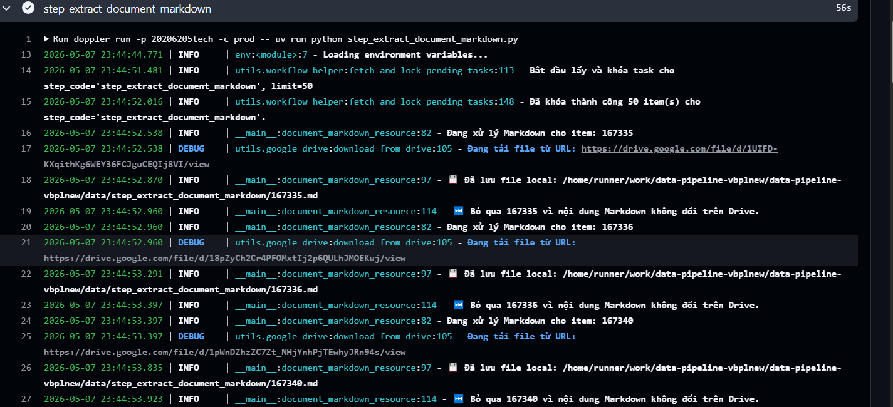
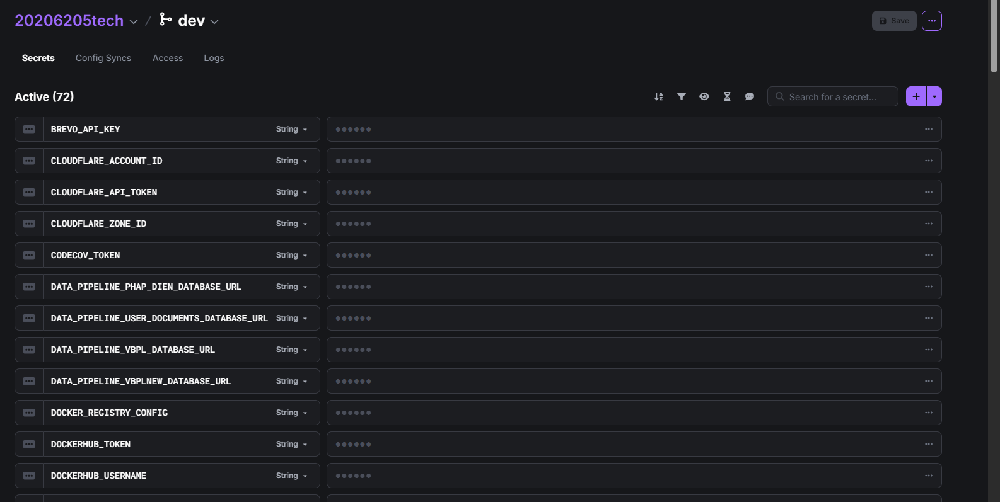
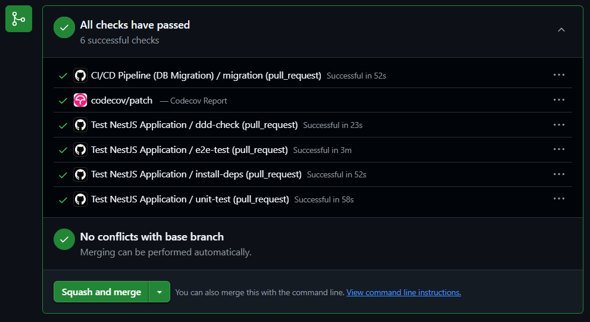
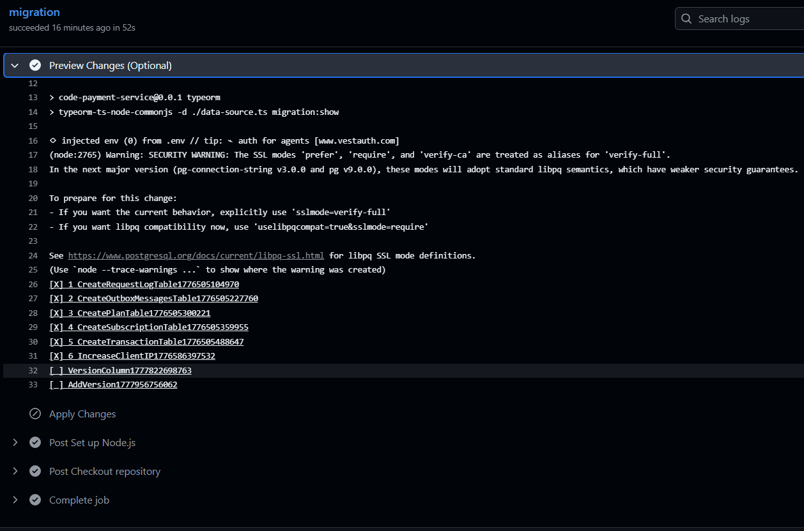
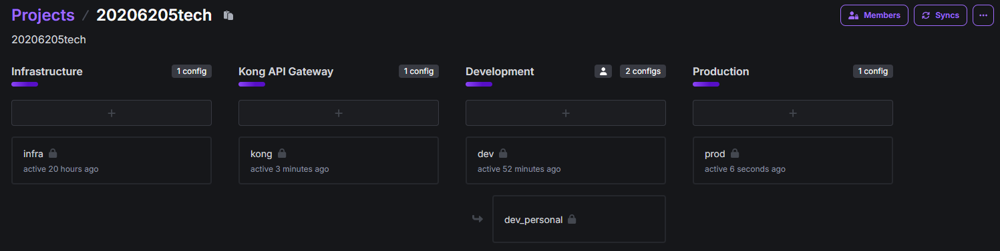
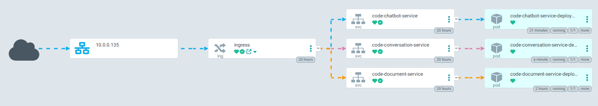
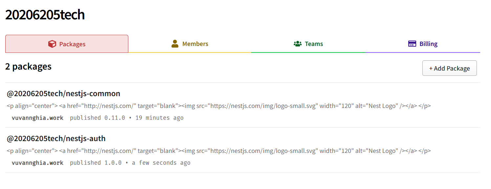
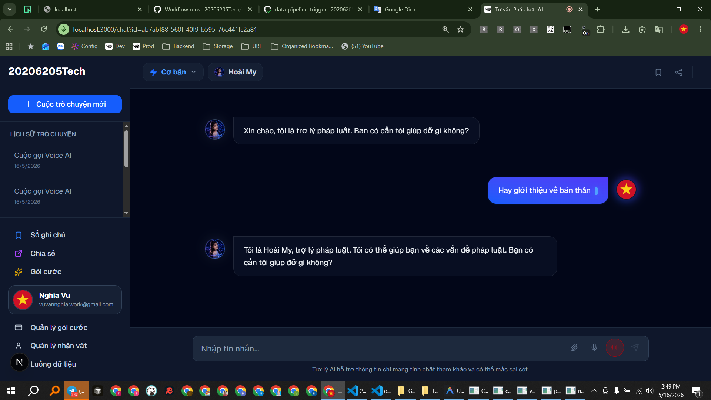
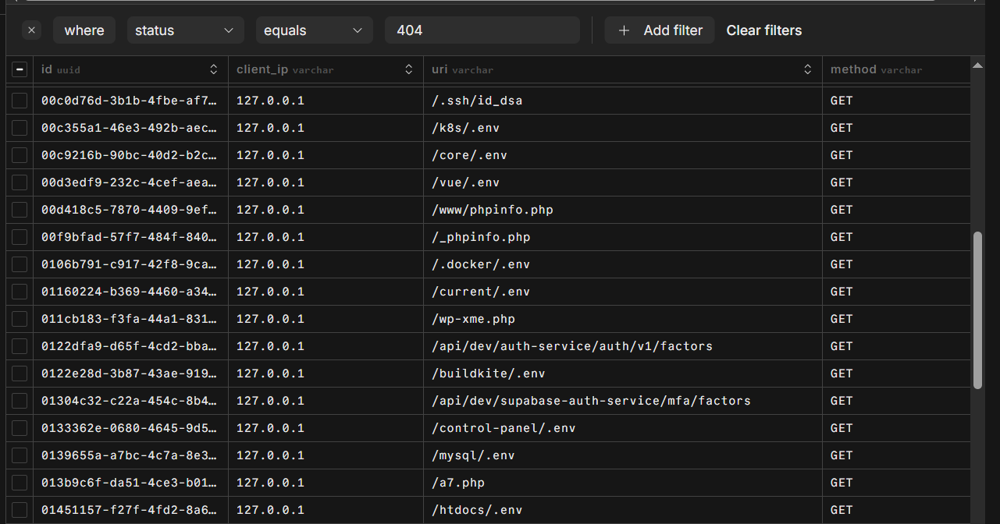
https://testcontainers.com
==========================================
- Tạo gói common: 20206205tech-nestjs-common
-
Vẽ sơ đồ có gói common
-
Tự động cập nhật thư viện hàng ngày dependabot
-
Thêm tracing với honeycomb
-
Sử dụng docker, kubernetes, ... => Tạo gitops với argocd
-
ADMIN ít query truy vấn, ổn định url cố định => vercel
- Tạo vbplnew và vbplnew service
-
Tạo pháp điển và pháp điển service
-
Do doc có AI đơn giản nên dùng langfuse
-
Cố định loại cổng thanh toán để Demo và DDD chỉ cần Iterface : demo-payment-ddd + swagger + heroku + demo
-
Chức năng RAG đơn giản, suy luận (use_reasoning)
-
Xem thêm folder docs của các REPO vào báo cáo
- Do dùng miễn phí nên Neon không đủ, bị giới hạn => đổi qdrant và neon => thay đổi pháp điển dùng qdrant và user docs dùng neon, Chuyển database vbpl sang digitalocean
-
phapdien trong step_download_zip có zip_check
-
CÀI ĐẶT: Thêm âm thanh trả lời auto_play_audio=false, true
-
Xoay vòng các url: 20206205.work.gd, toeic.work.gd, hust.work.gd
-
Xử lý cảnh báo Redis BullMQ (IMPORTANT! Eviction policy is volatile-lru. It should be "noeviction") => chỉnh Redis thành noeviction và xóa task bằng code
- Xem kỹ lại các cổng thanh toán
- Quay lại Màn giao diện thanh toán thành công
-
Nếu người dùng mua nhiều lần => cộng dồn ngày
-
Xem kỹ về DDD và Viết test
- doc-service xử lý FILE dùng database Milvus
==========================================
Chụp ảnh database vector Chụp 2 loại database
==========================================
- gRPC làm xong thì mới thành thư viện
- Thiết lập Kong truyền thêm một Header bí mật (ví dụ: X-Gateway-Auth) thì mới cho gọi request
-
Chức năng TOTP do nội dung pháp luật cần bảo vệ (TOTP làm xong thì mới thêm vì thêm bước) https://gemini.google.com/app/a33cd53e27c33d50
-
code-persona-service
-
Nguồn Văn bản tiếng anh, (Sự phức tạp không chỉ nằm ở khối lượng dữ liệu, mà các văn bản có thể thay thế, bổ sung, hết hiệu lực, ...)
-
csrf
- CORS
==========================================
-
Xử lý các định dạng file khác nhau => RAG
-
Câu bắt đầu của nhân vật
- Thống nhất shared-chats, shared-link, Chỉnh thành share
==========================================
==========================================
Người dùng nhắc đến văn bản pháp luật thì mới check
Chức năng Dashboard của ADMIN??? admin quản lý thanh toán và kích hoạt thủ công Giao diện admin thanh toán thủ công như thế nào ? Tìm kiếm theo id giao dịch, user, ....
Pytest
Cộng dồn thanh toán
Tôi có nên chỉnh lại BaseVersionAggregateRoot trong common không cần version để đỡ phức tạp???
Chức năng voice và Persona Service
Gói auth python, nestjs vì auth service supabse => tiện, không lặp code
Khi chia doc service => doc nhẹ GET thoải mái và doc không cần AI nữa Vẽ cả RAG langchain-text-splitters tương tư Data pipeline
Ấn new chat nhưng vẫn hiện file của chat cũ??? Khi ấn nút new chat phải gọi api /start?
Không thể retry tài liệu đang ở trạng thái: PROCESSING, COMPLETED
Chụp ảnh reids
Nhiều giấy tờ văn bản khó tiếp cận
người già cần voice người trẻ cần voice
demo mail
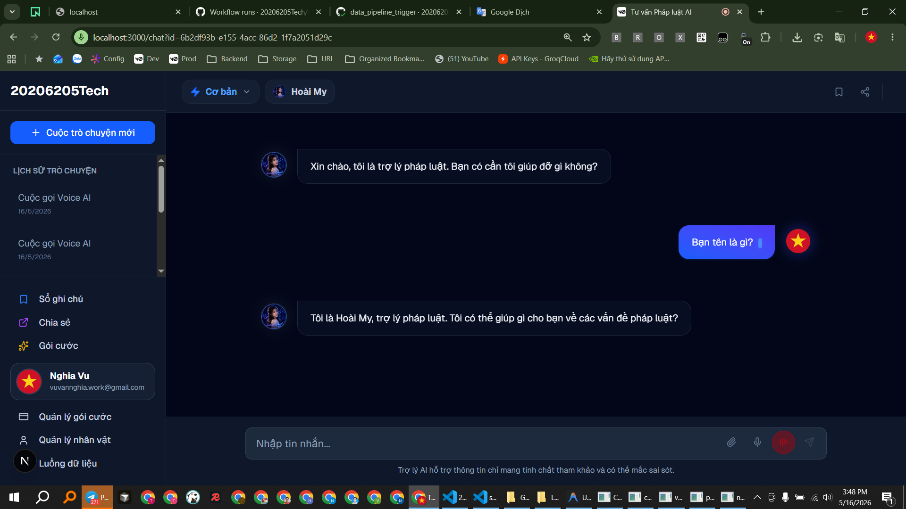
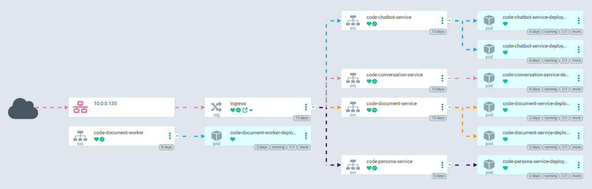